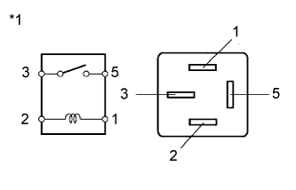

DTC C1751/51 Compressor Relay Coil Malfunction |
| DTC Code | DTC Detection Condition | Trouble Area |
| C1751/51 | Either condition is met:
|
|
| 1.PERFORM ACTIVE TEST USING INTELLIGENT TESTER (COMPRESSOR MOTOR RELAY) |
Turn the engine switch off.
Connect the intelligent tester to the DLC3.
Turn the engine switch on (IG).
Turn the intelligent tester on.
Enter the following menus: Chassis / Air suspension / Active Test.
| Tester Display | Test Part | Control Range | Diagnostic Note |
| Compressor Motor Relay | AIR SUS relay | ON or OFF |
|
| Result | Proceed to |
| NG | A |
| OK (When troubleshooting according to problem symptoms table) | B |
| OK (When troubleshooting according to DTC chart) | C |
|
| ||||
|
| ||||
| A | |
| 2.INSPECT SUSPENSION CONTROL RELAY (AIR SUS) |
Turn the engine switch off.
Remove the AIR SUS relay from the engine room relay block.
|  |
Measure the resistance according to the value(s) in the table below.
| Tester Connection | Condition | Specified Condition |
| 3 - 5 | 12 V battery voltage is not applied to terminal 1 and 2 | 10 kΩ or higher |
| 12 V battery voltage is applied to terminal 1 and 2 | Below 1 Ω |
| *1 | AIR SUS Relay |
|
| ||||
| OK | |
| 3.CHECK HARNESS AND CONNECTOR (SUSPENSION CONTROL ECU - AIR SUS RELAY) |
Disconnect the R22 suspension control ECU connector.
Remove the AIR SUS relay from the engine room relay block.
Measure the resistance according to the value(s) in the table below.
| Tester Connection | Condition | Specified Condition |
| R22-22 (RC) - Engine room relay block AIR SUS relay terminal 1 | Always | Below 1 Ω |
| R22-22 (RC) - Body ground | Always | 10 kΩ or higher |
| Engine room relay block AIR SUS relay terminal 2 - Body ground | Always | Below 1 Ω |
|
| ||||
| OK | ||
| ||